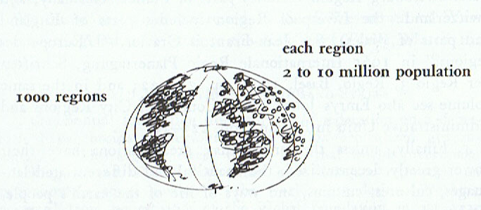
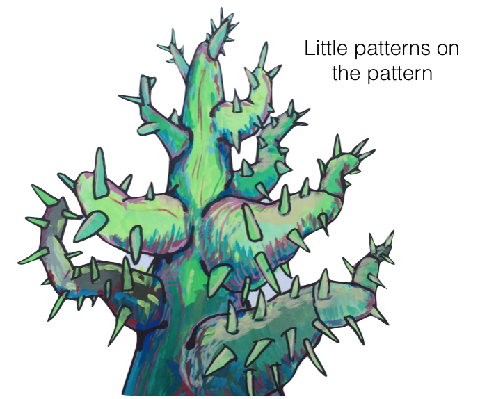

BIG PATTERN * *
We begin with pointing out a coherent overview of the pattern we are trying to describe. This global pattern contains several constituent patterns. This is the big idea right here.
This is the part where we write for a couple paragraphs or pages, giving some background on this pattern we have identified. We describe the big pattern, and talk about the smaller constituent patterns that make up the bigger pattern. This is a kind of larger roadmap, along with some suggestions for using the smaller patterns, it’s an overview and organizing framework with suggestions for thinking using the pattern language for this section.
A short useful statement summarizing the heart of this next pattern, and what it does and connects to;
1. THIS PATTERN
2. THAT PATTERN
THIS PATTERN
The things will be this way or that way, says this pattern
As many paragraphs as you need to justify and explain the pattern and it’s uses.
Therefore:
Wherever possible, do this thing to use the pattern, so it contributes to the whole pattern

Remember, do this thing, as it feed into –THAT PATTERN…
THAT PATTERN

The things will be this way or that way, says this pattern
As many paragraphs as you need to justify and explain the pattern and it’s uses.
Therefore:
Wherever possible, do this thing to use the pattern, so it contributes to the whole pattern

Remember, do this thing, as it feeds into –THE NEXT PATTERN…